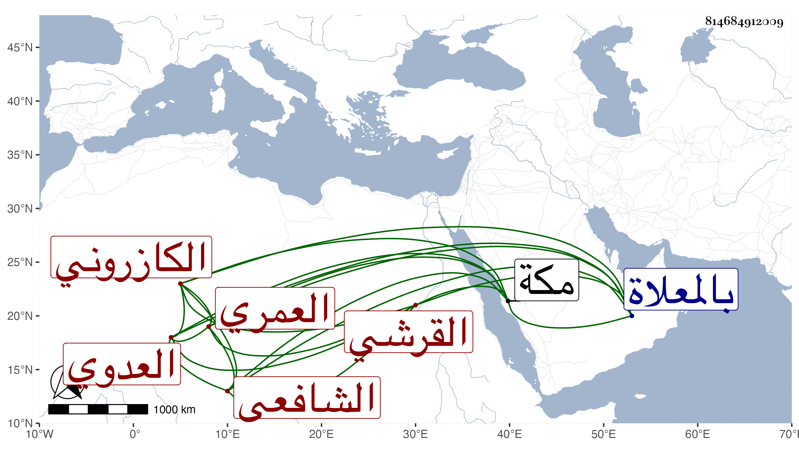

0902Sakhawi.DawLamic.ITO20230111-ara1.EIS1600.814684912009
Biography ID: 814684912009
714
منصور بن الحسن بن علي بن اختيار الدين فريدون بن علي بن محمد العماد القرشي العدوي العمري الكازروني الشافعي . عالم أخذ عن ابن الجزري بل وحضر عند السيد الجرجاني وبحث معه ورافق السيد صفي الدين الإيجي إلى الخواجا فاختليا عنده في آن واحد وقال إن شيخه ابن الجزري أنشد فيه :
| يا صاح عرج نحو خاف تجد | زينا يضاهي بشرا الحافي |
| حبرا بدا في عصره قدوة | فأعجب لهذا الظاهر الخافي |
وصنف ما ينيف على مائة تأليف منها لطائف الألطاف في تحقيق التفسير ونقد الكشاف وشرح البخاري ولم يكملا وحجة السفرة البررة على المبتدعة الفجرة الكفرة في نقد الفصوص لابن عربي ، وكان متقدما في العقليات سنيا يصبغ بالحمرة جاور بمكة في سنة ثمان وخمسين وكانت وقفتها الجمعة ، واستمر مجاورا منجمعا عن الناس لا يخرج من بيته غالبا حتى مات بها في آخر يوم الثلاثاء ثاني عشرى ربيع الأول سنة ستين ودفن بالمعلاة ولقيه بها قبل موته بسنة الكمال موسى الذؤالي وحمزة الناشري اليماني وحدثاني بترجمته وبكلام له في ابن عربي أثبته في مؤلفي فيه رحمه الله ونفعنا به .
